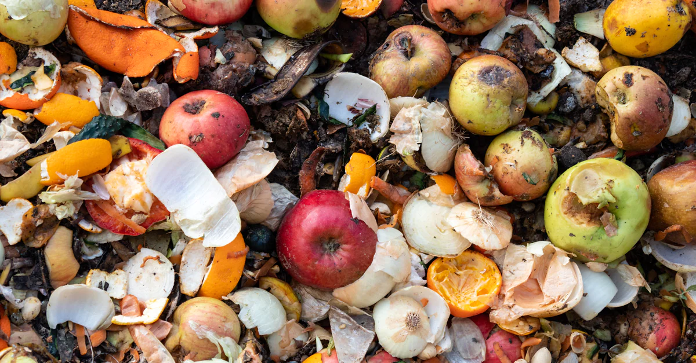
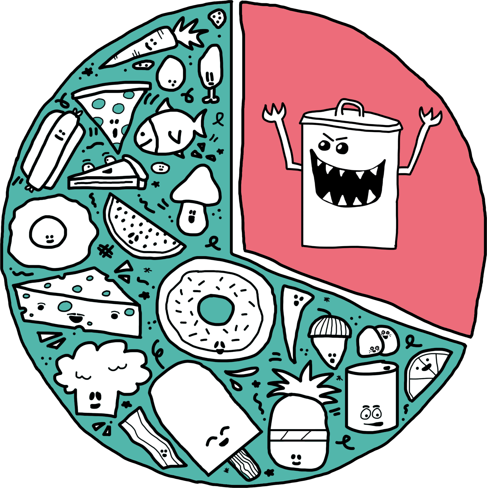

Hver dag bliver der smidt betydelige mængder mad ud i de danske husholdninger.
Men selvom det største madspild sker, inden maden bliver solgt til forbrugerne, kan man alligevel gøre en forskel.
 Madaffald er alt affald, der stammer fra mad. Madaffald kan opdeles i to: madspild og øvrigt madaffald. Madspild er fødevarer, der kunne være spist, men i stedet er blevet smidt ud. Øvrigt madaffald er de dele af fødevarer, der ikke er egnet til at spise. Eksempler på madspild er brød, hel frugt og grønt og middagsrester. Eksempler på øvrigt madaffald er æggeskaller, osteskorper, kaffegrums og kernehuse.
kilde: Miljøstyrelsen, rapporten ”Kortlægning af madaffald i servicesektoren – Detailhandel, restauranter og storkøkkener”
Samlet smider vi i Danmark hvert år over 700.000 ton mad ud, som kunne være spist. Husholdningernes madspild udgør 260.000 ton pr. år. I servicesektoren er der et årligt madspild på 227.000 ton, heraf 163.000 ton fra detailhandlen, 29.000 ton fra hoteller og restauranter og 31.000 ton fra institutioner og storkøkkener om året. Madspild fra primærproduktionen udgør 100.000 ton pr. år, mens fødevareindustrien står for et årligt madspild på 133.000 ton.
kilde: Miljøministeriet, Regeringens Strategi for affaldsforebyggelse ”Danmark uden affald II”